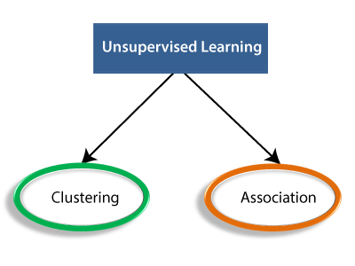

A category of machine learning that uses labeled datasets to train algorithms to predict outcomes and recognize patterns.
Features of Machine Learning:
Machine learning uses data to detect various patterns in a given dataset.
It can learn from past data and improve automatically.
It is a data-driven technology.
Machine learning is much similar to data mining as it also deals with the huge amount of the data.
Advantages
With the help of supervised learning, the model can predict the output on the basis of prior experiences.
In supervised learning, we can have an exact idea about the classes of objects.
Supervised learning model helps us to solve various real-world problems such as fraud detection, spam filtering, etc.
Disadvantages
Supervised learning models are not suitable for handling the complex tasks.
Supervised learning cannot predict the correct output if the test data is different from the training dataset.
Training required lots of computation times.
In supervised learning, we need enough knowledge about the classes of object.
Unsupervised Machine Learning
Unsupervised learning is a type of machine learning in which models are trained using unlabeled dataset and are allowed to act on that data without any supervision.
Features of Unsupervised Machine Learning
Unsupervised learning is helpful for finding useful insights from the data.
Unsupervised learning is much similar as a human learns to think by their
own experiences, which makes it closer to the real AI.
Unsupervised learning works on unlabeled and uncategorized data which
make unsupervised learning more important.
In real-world, we do not always have input data with the corresponding output
so to solve such cases, we need unsupervised learning.
Advantages
Unsupervised learning is used for more complex tasks as compared to supervised learning because, in unsupervised learning, we don't have labeled input data.
Unsupervised learning is preferable as it is easy to get unlabeled data in comparison to labeled data.

Disadantages
Unsupervised learning is intrinsically more difficult than supervised learning as it does not have corresponding output.
The result of the unsupervised learning algorithm might be less accurate as input data is not labeled, and algorithms do not know the exact output in advance.
Semi-Supervised Machine Learning
Semi-Supervised learning is a type of Machine Learning algorithm that represents the intermediate
ground between Supervised and Unsupervised learning algorithms.
Features of Semi-Supervised Machine Learning
Firstly, it trains the model with less amount of training data similar to the supervised learning
models.
The training continues until the model gives accurate results.
The algorithms use the unlabeled dataset with pseudo labels in the
next step, and now the result may not be accurate.
Now, the labels from labeled training data and pseudo labels data are linked together.
The input data in labeled training data and unlabeled training data are also linked.
In the end, again train the model with the new combined input as did in the first step. It will
reduce errors and improve the accuracy of the model.
Advantages
It works effeciently with unstructured and semi structured data.
People who have zero knowledge of data can also operate SVM
The risk of overfitting is less in SVM
People who have zero knowledge of data can also operate SVM
Disadvantages
It is difficult to have good kerel function
It requires long training time for large databases
Hyper parameters like Code-C and gramma are very difficult to fine-tune
It requires fall labelling of input data.
Reinforcement Machine Learning
Semi-Supervised learning is a type of Machine Learning algorithm that represents the intermediate
ground between Supervised and Unsupervised learning algorithms.
Features of Semi-Supervised Machine Learning
Firstly, it trains the model with less amount of training data similar to the supervised learning
models.
The training continues until the model gives accurate results.
The algorithms use the unlabeled dataset with pseudo labels in the
next step, and now the result may not be accurate.
Now, the labels from labeled training data and pseudo labels data are linked together.
The input data in labeled training data and unlabeled training data are also linked.
In the end, again train the model with the new combined input as did in the first step. It will
reduce errors and improve the accuracy of the model.
Advantages
It works effeciently with unstructured and semi structured data.
People who have zero knowledge of data can also operate SVM
The risk of overfitting is less in SVM
People who have zero knowledge of data can also operate SVM
Disadvantages
It is difficult to have good kerel function
It requires long training time for large databases
Hyper parameters like Code-C and gramma are very difficult to fine-tune